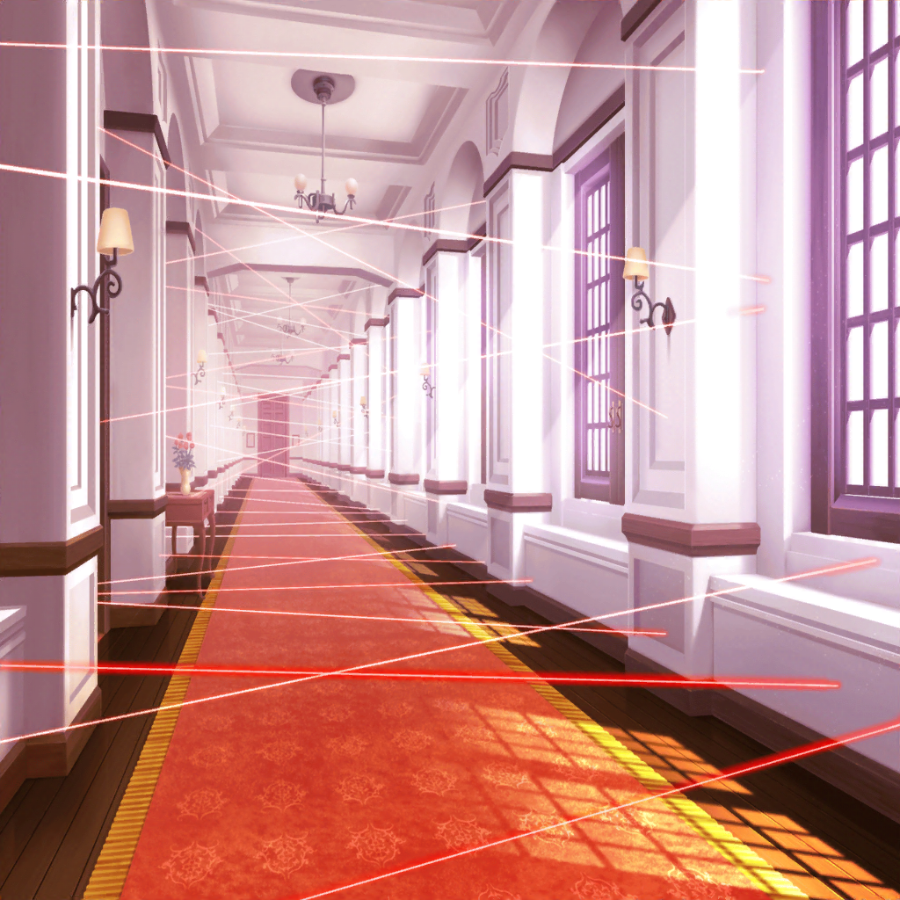

弦巻家 廊下
ひまり
……あ！ スカーレット、見てあの扉！
あそこだけセンサーが張られてないよ
蘭
ホントだ！ 怪しいね……行ってみよう
弦巻家 青の間
蘭
なにここ？
モカ
ピアノが一台ある……めっちゃ青いね。
あ……ちょうちょがいる
ひまり
この部屋なんか怖い！
多分関係ない部屋だよね、他の部屋探そうっ
弦巻家 廊下
ひまり
変な部屋がいっぱいあってよくわかんないよ〜！
モカ
青い部屋ばっかりあるね〜
蘭
次でそろそろ正解引き当てたいんだけど……
ひまり
よし、じゃあここも入ってみよう……っ！
スイッチャールーム
モカ
おー、今度は正解じゃない？ いろんなスイッチがいっぱい
ひまり
よかったあー……じゃあ早速……
？？？
まてーっ！！
蘭
だ、誰！？
はぐみ
赤外線スイッチが切りたくば、
今からはぐみが出す問題に答えろっ！
モカ
おー、次ははぐみが相手か〜
蘭
なるほど、ハロハピ総力戦ってことだね
はぐみ
それじゃあいくよ！
３回間違えたら失敗だからね！
はぐみ
救難信号にある、『SOS』は何の略でしょうか！
蘭・モカ・ひまり
うーん……
蘭
前に、授業で習った気がする！
なんだっけな……
モカ
『しぬ〜！ おわった！ 遭難だ〜！』
モカ
ダメか〜
ひまり
『遭難です！ お助けください！ 遭難です！』
蘭
ちょ、ちょっとキューティもハラペコも！
もっとみんなで相談してから答えようよ！
貴重な解答権が……っ
ひまり
ううっ、ごめん……
はぐみ
さあ！ 答えられるのはあと１回だよ〜！！
モカ
蘭を信じてるよ！
蘭
……えっと……SOS……SOS……
蘭
せ……『Save』、お……『お助けください』？
S……S……『Ship』！！
はぐみ
ブー！ ちがうよー！
モカ
言いたいことはわかるんだけどさ、
なんで『お助けください』だけ日本語なの？
蘭
お、思いつかなくて……
ひまり
これで私達、ゲームオーバー！？
どうなっちゃうの！？
はぐみ
そう！ みんな、これで終わりだよっ！
蘭
うっ……そ、そうだ！
て、ていうか！ はぐみは答え知ってるわけ！？
はぐみ
えっ！？
蘭
さっきから、ハズレの音が鳴るのを確認してるだけじゃん。
もしかして、はぐみも答えわかんないんじゃないの！？
はぐみ
え、えっと……
蘭
はぐみも答え、知らないんでしょ？
それならあたし達おあいこだよね
はぐみ
うう……
蘭
SOSは何の略か。はぐみが答えられたらあたし達
諦めるよ。けど、もしはぐみもはずれたら
センサーのスイッチ、切ってほしい
はぐみ
えすおーえす……えっと……
ど、どうしよう……だ、誰か教え……
蘭
動かないで！
はぐみ、今はあたしと話してるんだから
蘭
（押せる！ このままはぐみをうまく丸め込めたら……！）
？？？
はいダメー！ はい、終了でーす！
ひまり
だ、誰！？
……うわあ！？
モカ
わ、ミッシェルさんじゃないですか〜
ミッシェル
美竹さん、純粋なはぐみに悪いこと教えないでくださーい。
ふう、危なかったー……
蘭
あとちょっとだったのに！
ミッシェル
ハズレはハズレなんで。
ちなみに、『SOS』はなんの略称でもありません。
……っていうのが答えでーす
蘭
は？ それずるくない！？ ひっかけじゃん！
ミッシェル
なんとでも言ってくださーい。
不正解の罰として、ちょうど捕まえた上原さんは
無限くすぐりの刑に処しまーす
ひまり
えっ！？ わ、私だけっ！？
蘭
キューティ……キューティのこと、あたし忘れないよ
モカ
キューちゃん、さらば……
ひまり
ちょ、ちょっと……わ！ あはっ、あはははっ！！
く、くすぐったい〜〜！！ あははははっ！！
モカ
とりあえずこのスキに、あたし達は先に進もう〜